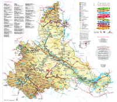

Sestrica, incluido en la ruta nº 2 de las rutas por la provincia propuestas por la Diputación Provincial de Zaragoza 
Desde el Norte, Sur y Este, por la autovía A-2 hasta El Frasno, tomar la salida con dirección a Illueca
por la A-1503. Pasado Morés, a 1 km., girar a la izquierda por la CV-101, hasta Sestrica. Tomar la CV-706
para llegar a Viver de la Sierra.
Desde el Norte, por la ruta Tarazona-Magallón-La Almunia o por el corredor del Jalón por la ruta
Figueruelas-La Almunia y salir a la A-2.
Desde el Oeste, llegar a Soria y tomar la N-234 hasta Calatayud y luego la A-2 hasta El Frasno.
Como alternativa más lenta pero más panorámica, dejar la N-234 al llegar a la altura de Malanquilla y
acceder a la A-1503 recorriendo el valle del Aranda hasta pasar Brea de Aragón.
Otra alternativa por la N-234 es llegar a Cervera de la Cañada y desviarse hacia Aniñón. Desde allí una
pista asfaltada lleva hasta el límite con el municipio de Sestrica, donde se toma una pista sin asfaltar
que lleva a Viver de la Sierra.
Las líneas de largo recorrido de Renfe llegan hasta Zaragoza y Calatayud. Desde ambas estaciones circulan trenes regionales que llegan hasta Morés.
El aeropuerto más cercano es el de Zaragoza (80 kms).
La empresa Automóviles del Río Aranda, S.L. efectúa transporte
regular entre la Comarca del Aranda y Zaragoza o Calatayud. Las paradas más cercanas a Sestrica son Morés
y Brea de Aragón.
Automóviles del Río Aranda, S.L. efectúa en algunos días
laborables la línea regular
Viver de la Sierra-Sestrica-Morés-Calatayud o Zaragoza
Nota: El servicio desde o hacia Viver se realizará llamando el día anterior, antes de las 20:00h., al
teléfono 976 824 177
Nota: La situación de alerta sanitaria ha alterado los horarios habituales. Contacte con la empresa.
Información: Tels. 976 82 41 77 - 902 490 690 y en www.automovilesara.es
Jueves laborables:
Viver de la S. - Sestrica - Purroy - Morés - Sabiñán
Ida 8:15h. 8:30h. 8:45h. 9:00h. 9:05h.
Vuelta Cuando acaben las consultas de los viajeros en el Centro de Salud de Sabiñán
Nota: La situación de alerta sanitaria puede alterar los horarios en cualquier momento. Contacte con la
empresa.
Más información: teléfonos 692113691